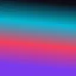

<!doctype html>
<!--
  Example: animated media decorations for the sidebar menu slot.

  Use it: copy this folder to root/slots/menu/ and add
    "slots": { "menu": { "entry": "root/slots/menu/index.html" } }

  Media rules this follows (the GIF equivalent of orb.mp4 would be ~40x larger):
  - Animation is a muted, looping, inline H.264 MP4 (8 KB), never a GIF.
  - The still frame is <picture> with AVIF first and WebP fallback, with explicit
    width/height so nothing shifts, loading="lazy" and decoding="async".
  - ONE <video> decodes the loop (preload="none"; it only gets a src and play()
    once on screen). Every other item mirrors its frames into a small DPR-sized
    canvas from requestVideoFrameCallback: one decoder instead of five, and no
    multi-video cadence drop (several playing videos can pull a page to 30 Hz).
  - It pauses when hidden or offscreen, which also stops the frame callbacks.
  - prefers-reduced-motion: the video is never started; the stills stay.
  - hue-rotate (a compositor filter) gives each item its own colour.
  Regenerate the media with `bash make-media.sh` (ffmpeg).
-->
<html lang="en">
<head>
<meta charset="utf-8">
<meta name="viewport" content="width=device-width, initial-scale=1">
<title>media-menu</title>
<style>
  :root { color-scheme: light dark; --ink: #1b1928; --muted: #6d6a7c; --hover: rgb(124 58 237 / 0.08); }
  @media (prefers-color-scheme: dark) { :root { --ink: #f2f0fa; --muted: #9c98b0; --hover: rgb(167 139 250 / 0.12); } }
  body { margin: 0; padding: 4px 0; background: transparent; color: var(--ink); font: 14px/1.3 -apple-system, BlinkMacSystemFont, "Segoe UI", system-ui, sans-serif; }
  ul { list-style: none; margin: 0; padding: 0; }
  a { display: flex; align-items: center; gap: 10px; padding: 7px 8px; border-radius: 10px; color: inherit; text-decoration: none; }
  a:hover, a:focus-visible { background: var(--hover); outline: none; }
  .orb { position: relative; flex: none; width: 28px; height: 28px; border-radius: 50%; overflow: hidden; transition: transform 220ms cubic-bezier(0.2, 0.8, 0.2, 1); }
  a:hover .orb { transform: scale(1.12); }
  .orb img, .orb video, .orb canvas { position: absolute; inset: 0; width: 100%; height: 100%; object-fit: cover; }
  .orb video, .orb canvas { opacity: 0; transition: opacity 300ms ease; }
  .playing .orb video, .playing .orb canvas { opacity: 1; }
  .hint { margin-left: auto; color: var(--muted); font-size: 12px; }
  @media (prefers-reduced-motion: reduce) { .orb, .orb video { transition: none; } a:hover .orb { transform: none; } }
</style>
</head>
<body>
<ul id="menu"></ul>
<script>
  const ITEMS = [
    { label: 'New agent', hint: '⌘N', hue: 0 },
    { label: 'Dashboards', hint: '', hue: 70 },
    { label: 'Inbox', hint: '3', hue: 150 },
    { label: 'Files', hint: '', hue: 220 },
    { label: 'Settings', hint: '', hue: 300 },
  ];
  const reduceMotion = matchMedia('(prefers-reduced-motion: reduce)');
  const menu = document.getElementById('menu');
  const SIZE = 28;
  const dpr = Math.min(window.devicePixelRatio || 1, 3);
  const mirrors = [];
  let video = null;
  ITEMS.forEach((item, i) => {
    const li = document.createElement('li');
    const live = i === 0
      ? `<video width="${SIZE}" height="${SIZE}" muted loop playsinline preload="none" aria-hidden="true"></video>`
      : `<canvas width="${SIZE * dpr}" height="${SIZE * dpr}" aria-hidden="true"></canvas>`;
    li.innerHTML = `<a href="#" role="menuitem">
      <span class="orb" style="filter: hue-rotate(${item.hue}deg)">
        <picture><source srcset="orb.avif" type="image/avif"></picture>
        ${live}
      </span>
      <span></span><span class="hint"></span></a>`;
    li.querySelector('span:nth-of-type(2)').textContent = item.label;
    li.querySelector('.hint').textContent = item.hint;
    li.querySelector('a').addEventListener('click', (e) => e.preventDefault());
    menu.append(li);
    if (i === 0) video = li.querySelector('video');
    else mirrors.push(li.querySelector('canvas').getContext('2d', { alpha: false }));
  });

  // Mirror each decoded frame into the other orbs (fires only while playing).
  const hasVfc = 'requestVideoFrameCallback' in HTMLVideoElement.prototype;
  function paintMirrors() {
    for (const ctx of mirrors) ctx.drawImage(video, 0, 0, ctx.canvas.width, ctx.canvas.height);
  }
  function onFrame() {
    paintMirrors();
    if (!video.paused) video.requestVideoFrameCallback(onFrame);
  }
  let fallbackRaf = 0;
  function fallbackLoop() {
    paintMirrors();
    fallbackRaf = video.paused ? 0 : requestAnimationFrame(fallbackLoop);
  }

  let onscreen = false;
  function sync() {
    const motion = !reduceMotion.matches && !document.hidden && onscreen;
    if (motion) {
      if (!video.src) video.src = 'orb.mp4';
      video.play().then(() => {
        menu.classList.add('playing');
        if (hasVfc) video.requestVideoFrameCallback(onFrame);
        else if (!fallbackRaf) fallbackRaf = requestAnimationFrame(fallbackLoop);
      }, () => {});
    } else if (!video.paused || menu.classList.contains('playing')) {
      video.pause();
      menu.classList.remove('playing');
      cancelAnimationFrame(fallbackRaf);
      fallbackRaf = 0;
    }
  }
  new IntersectionObserver(([entry]) => { onscreen = entry.isIntersecting; sync(); }).observe(menu);
  document.addEventListener('visibilitychange', sync);
  reduceMotion.addEventListener('change', sync);

  const reportHeight = () => parent.postMessage({ type: 'rose:resize', height: Math.ceil(document.documentElement.scrollHeight) }, '*');
  new ResizeObserver(reportHeight).observe(document.body);
  parent.postMessage({ type: 'rose:ready' }, '*');
  reportHeight();
</script>
</body>
</html>
